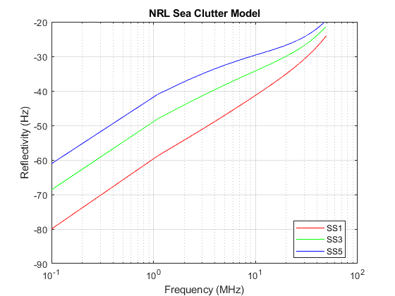

%%Joshua Gould - Homework Ch 5 - Intro to Radar Systems %%For the same radar used in problem 1, what is the volume V % in cubic meters of a volume clutter resolution cell at % R = 10 km? Repeat for R = 50 km. tao = 10e-6; %s c = 2.997924562e8; %Speed of Light azbeam = 3; %degrees elbeam = 3; %degrees Rgnd1 = 10000; %m Rgnd2= 50000; %m V1 = ((pi*(Rgnd1^2)*azbeam*elbeam)/4)*((c*tao)/2) V2 = ((pi*(Rgnd2^2)*azbeam*elbeam)/4)*((c*tao)/2)
V1 = 1.0596e+12 V2 = 2.6489e+13
%From the NRL Sea Clutter Model pdf (and feel free to copy the code at the end of the pdf): % i. Code Eq. 7 on page 6 % ii. Re-create Figure 8 on page 10. % In other words, for a 3 GHz radar, vertical polarization, % vary the grazing angle from 0.1 degrees to 50 degrees and % plot the reflectivity for Sea State 1, Sea State 3, and Sea % State 5. SS = [1 3 5]; x = 0.1:50; g = 10 * log10 (x); %grazing angle 0.1 degrees to 50 in dB scale % Sea State 1, 3, 5 sign1 = NRL_SigmaSea(3,1,'V',x); sign3 = NRL_SigmaSea(3,3,'V',x); sign5 = NRL_SigmaSea(3,5,'V',x); figure(1); semilogx(x, sign1, 'r', x, sign3, 'g', x, sign5, 'b') ylim([-90 -20]); title('NRL Sea Clutter Model') legend('SS1','SS3','SS5', 'Location','best') xlabel('Frequency (MHz)') ylabel('Reflectivity (Hz)') grid on;